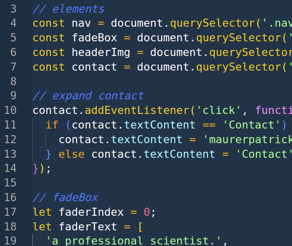
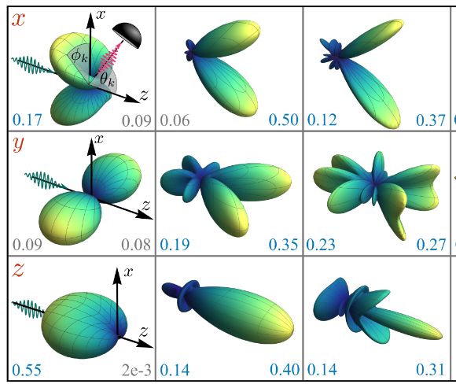
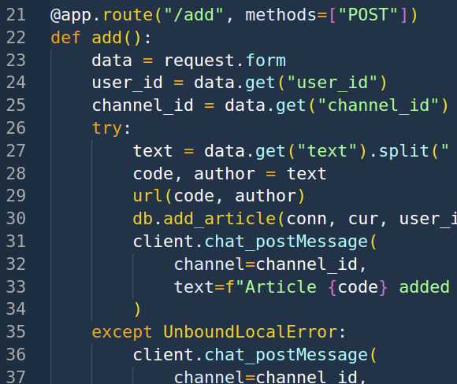
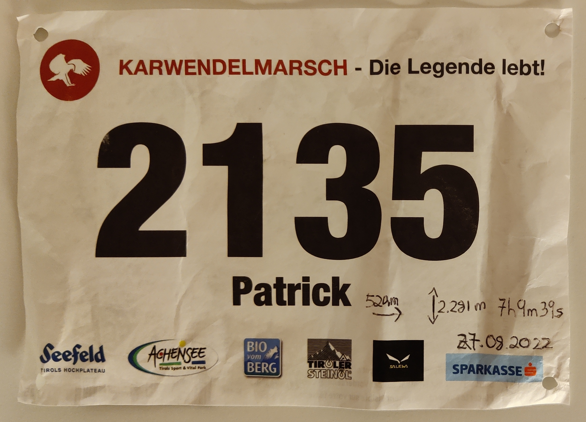

As a hobby project in my free time, I decided to learn the basics of web developement with the goal of creating my own website from scratch. Through this project, I was able to gain hands-on experience and learn valuable skills such as how to design and structure a website using HTML CSS, how to create dynamic and interactive elements using Javascript, and how to optimize CSS using SASS. What I enjoyed most about creating this website was getting creative and better understanding this technology that we use every day.
This Website
As a hobby project in my free time, I decided to learn the basics of web developement with the goal of creating my own website from scratch. Through this project, I was able to gain hands-on experience and learn valuable skills such as how to design and structure a website using HTML CSS, how to create dynamic and interactive elements using Javascript, and how to optimize CSS using SASS. What I enjoyed most about creating this website was getting creative and better understanding this technology that we use every day.

As a quantum physicist, I have contributed to the development of a theoretical model that explains how an optically levitated dielectric sphere of arbitrary size interacts with the electromagnetic field. Previously, the theory was well understood for spheres smaller than the otpical wavelength and has been key to the major breakthrough in the field, namely ground-state cooling. Now we have extended the theory to spheres of arbitrary size and developed a Python program that efficiently evaluates the required values using Numpy. Increasing the mass of the dielectric particles that can be cooled to the center-of-mass ground state is significant not just for testing quantum mechanics on a larger scale but also for ongoing experiments in search of new physics, such as dark matter, using optically levitated sensors.
Quantum Theory of Light Interaction with a Dielectric Sphere
As a quantum physicist, I have contributed to the development of a theoretical model that explains how an optically levitated dielectric sphere of arbitrary size interacts with the electromagnetic field. Previously, the theory was well understood for spheres smaller than the otpical wavelength and has been key to the major breakthrough in the field, namely ground-state cooling. Now we have extended the theory to spheres of arbitrary size and developed a Python program that efficiently evaluates the required values using Numpy. Increasing the mass of the dielectric particles that can be cooled to the center-of-mass ground state is significant not just for testing quantum mechanics on a larger scale but also for ongoing experiments in search of new physics, such as dark matter, using optically levitated sensors.

I recently developed a Slack app that automates a tedious task for members of my research group. Our team frequently checks the status of articles in APS journals, and manually inserting the article code and author's last name was becoming tedious. To streamline this process, I created a Flask app that interacts with the Slack API and a Postgresql database. The app is deployed on Render, and my team can now get the information they need with just a few clicks. The development process was a lot of fun and I gained valuable experience developing web applications. This project shows that I am able to identify and solve problems using technology, and I look forward to tackling more challenges in the future.
Slack App
I recently developed a Slack app that automates a tedious task for members of my research group. Our team frequently checks the status of articles in APS journals, and manually inserting the article code and author's last name was becoming tedious. To streamline this process, I created a Flask app that interacts with the Slack API and a Postgresql database. The app is deployed on Render, and my team can now get the information they need with just a few clicks. The development process was a lot of fun and I gained valuable experience developing web applications. This project shows that I am able to identify and solve problems using technology, and I look forward to tackling more challenges in the future.

It all started with hiking. I had never been into sports before, but I started to enjoy the physical activity paired with beautiful views. As I became more comfortable on the trails, I started hiking faster and faster, until eventually I found myself running. In 2022, I dicided to participate at the Karwendelmarsch, a 50km long and 2km altitude trail from Scharnitz to Pertisau which took me 7 hours. I enjoyed training for the run almost as much as the run itself. Now I can't wait to start getting ready for my next race!
Karwendelmarsch
It all started with hiking. I had never been into sports before, but I started to enjoy the physical activity paired with beautiful views. As I became more comfortable on the trails, I started hiking faster and faster, until eventually I found myself running. In 2022, I dicided to participate at the Karwendelmarsch, a 50km long and 2km altitude trail from Scharnitz to Pertisau which took me 7 hours. I enjoyed training for the run almost as much as the run itself. Now I can't wait to start getting ready for my next race!
Neural Network for Handwritten Digit Recognition
I'm really excited about artificial intelligence and machine learning. To start my journey, I wanted to understand the basics of how neural networks work. With my background in theoretical physics and my experience with Python, I was well prepared to take on this challenge. I found a great tutorial that showed me how to build a neural network from scratch. I enjoyed learning about perceptrons and backpropagation and seeing how it all comes together in recognizing handwritten digits. Now that I understand the basics, I'm looking forward to tackling more advanced projects and working with libraries.